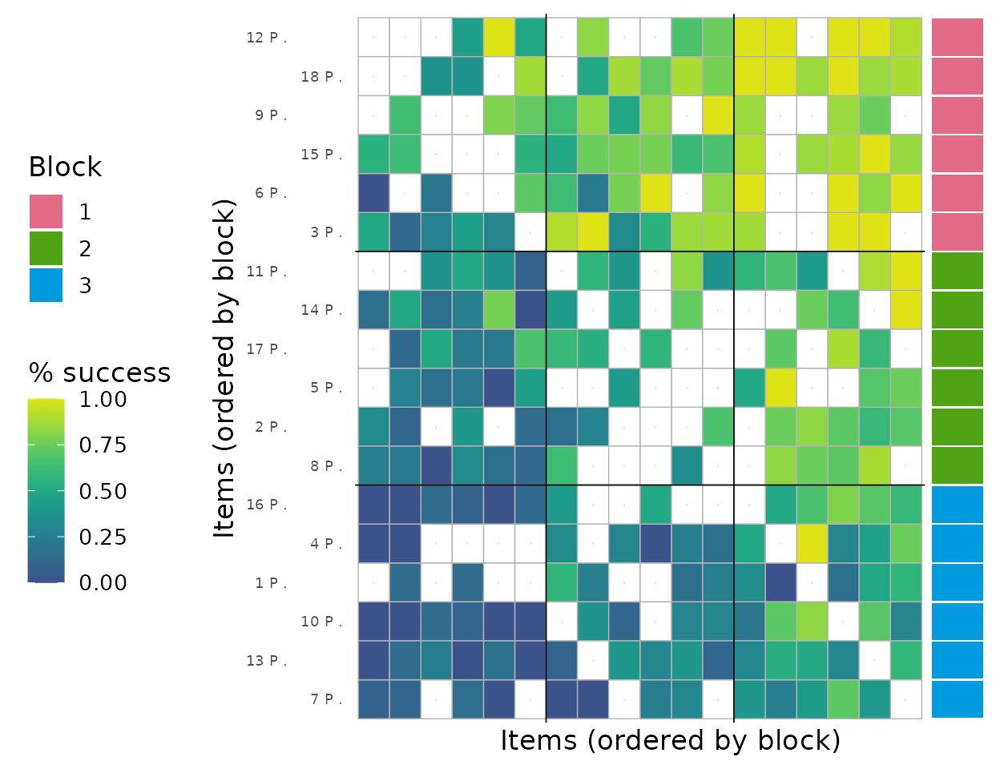
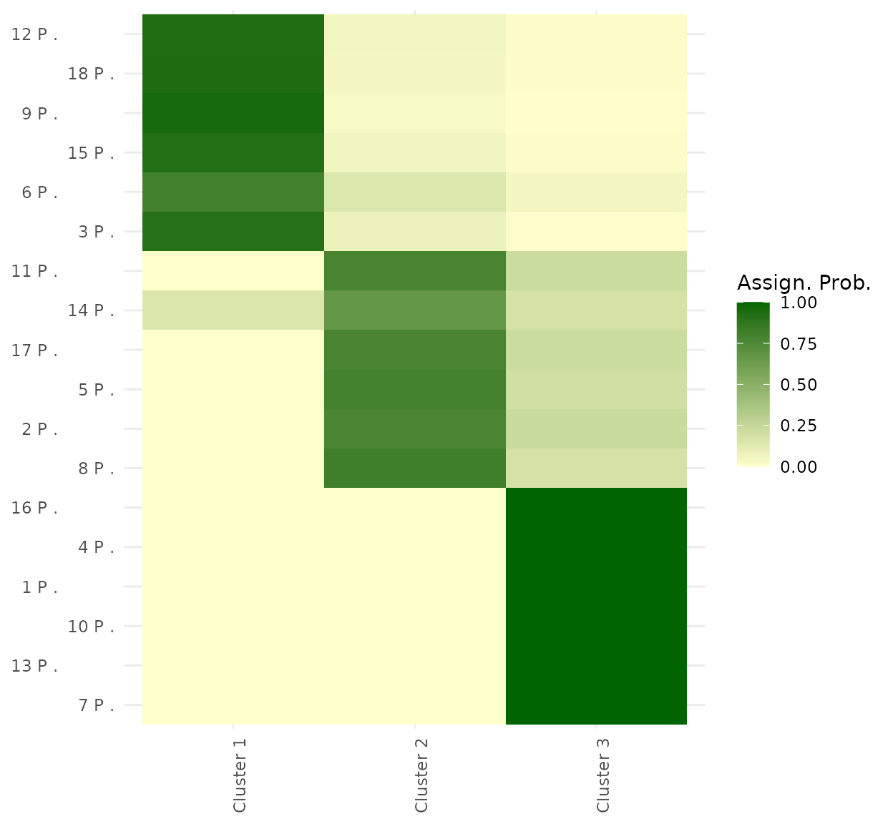
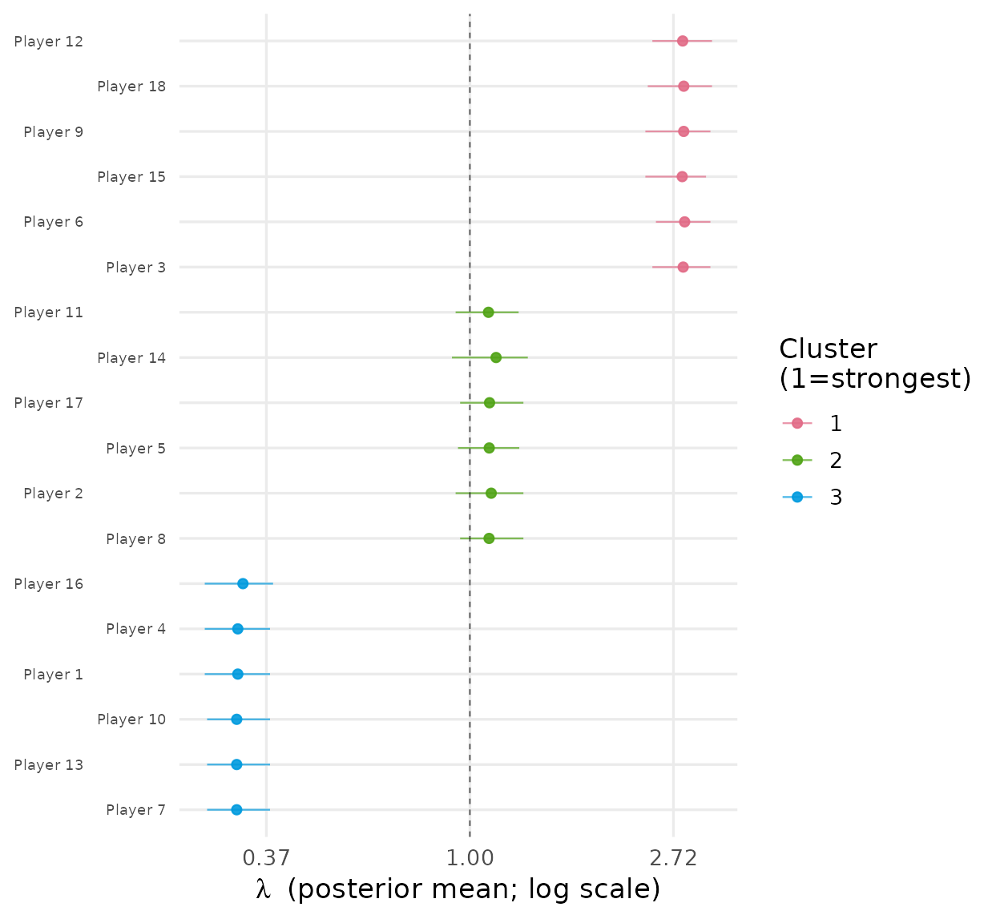
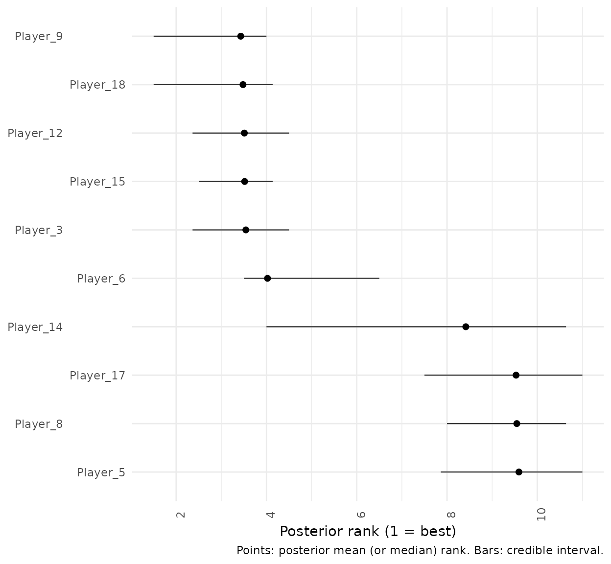

BTSBM: Bayesian Bradley-Terry Stochastic Block Models in R
Lapo Santi and Nial Friel
2026-05-22
Source:vignettes/BTSBM-software-paper.Rmd
BTSBM-software-paper.RmdAbstract
This software paper documents BTSBM, an R package for Bayesian Bradley-Terry stochastic block models in paired comparison problems. The package is built for settings where strict item-by-item ranking is often too brittle, but an ordered block structure is stable and interpretable. We model directed wins \(w_{ij}\), infer latent allocations \(x_i\), infer the number of occupied blocks \(K\), and estimate block intensities \(\lambda_k\). The package provides Gibbs samplers, post-processing for label alignment, visual diagnostics, and model comparison tools based on leave-one-out criteria.
The paper has two aims. The first is methodological: to explain the model and the Markov chain Monte Carlo updates in the notation used across the package. The second is practical: to provide a reproducible workflow with code and output, in the style commonly used in R package vignettes.
Introduction
This model is for paired-comparison analyses where the data are directional outcomes between items, such as wins/losses in sport, preference judgements, or expert comparisons. The package expects these data in adjacency-matrix form: a directed count matrix \(\mathbf{W}=(w_{ij})\), where \(w_{ij}\) is how many times \(i\) is preferred to or beats \(j\).
The standard Bradley-Terry model gives a strict item-level ranking. In many applications that resolution is too fine: nearby items are often not credibly separable. BT-SBM keeps the Bradley-Terry comparison structure but ranks latent blocks rather than individuals, so items in the same block are rank-indifferent while blocks remain ordered by strength.
Quick start
library(BTSBM)
# Directed win-count matrix (n x n), with zero diagonal
w_ij <- ATP_2000_2025$`2017`$Y_ij
diag(w_ij) <- 0L
fit <- gibbs_bt_sbm(
w_ij = w_ij,
prior = "GN",
gamma_GN = 0.8,
T_iter = 400,
T_burn = 200,
verbose = FALSE
)
post <- relabel_by_lambda(fit$x_samples, fit$lambda_samples)
plot_block_adjacency(fit = post, w_ij = w_ij)Data formatting details (optional)
The required input is a directed \(n\times n\) matrix \(\mathbf{W}=(w_{ij})\): rows are source items, columns are target items, and each cell \(w_{ij}\) records how many times item \(i\) beats, is chosen over, or is preferred to item \(j\).
When raw data come with multiple contexts or judges, first aggregate
those records to recover \(\mathbf{W}\). Let \(c\in\{1,\ldots,C\}\) index context, \(j\in\{1,\ldots,J\}\) index judge/rater, and
\(r\) index repeated pairwise
observations. Define \[
y_{ij}^{(c,j,r)}=\mathbf{1}\{\text{in replicate }r,\text{ judge }j\text{
in context }c\text{ prefers }i\text{ to }j\}.
\] Then \[
w_{ij}^{(c,j)} = \sum_r y_{ij}^{(c,j,r)},
\] and aggregate to \[
w_{ij}=\sum_{c=1}^{C}\sum_{j=1}^{J} w_{ij}^{(c,j)}.
\] This gives the directed adjacency matrix \(\mathbf{W}\) used by
gibbs_bt_sbm(). The match totals \(n_{ij}=w_{ij}+w_{ji}\) are computed
internally. If context effects are central, you can repeat the same
construction within each context \(c\)
and fit context-specific models.
Model and Notation
We use the same notation as the main BT-SBM paper and keep a one-to-one map to package objects.
Let \(w_{ij}\) be directed wins, with \(w_{ii}=0\), and define \[ n_{ij}=w_{ij}+w_{ji}. \]
Collecting all \(w_{ij}\) gives the directed outcome matrix \(\mathbf{W}\in\mathbb{N}^{n\times n}\), while \(\mathbf{N}=\mathbf{W}+\mathbf{W}^\top\) is symmetric with zero diagonal. We also use \(E=\{(i,j): n_{ij}>0\}\) for observed pairs.
Each item \(i\) has a latent block label \(x_i \in \{1,\dots,K\}\). Each occupied block \(k\) has intensity \(\lambda_k>0\). The Bradley-Terry map is \[ \theta_{x_i x_j} = \frac{\lambda_{x_i}}{\lambda_{x_i}+\lambda_{x_j}}, \] and outcomes satisfy \[ w_{ij} \mid n_{ij}, x, \lambda \sim \mathrm{Binomial}(n_{ij}, \theta_{x_i x_j}). \]
For priors on \(\lambda_k\), BTSBM uses \[ \lambda_k \sim \mathrm{Gamma}(a,b), \qquad b = \exp\{\psi(a)\}, \] so that \(\mathbb{E}[\log \lambda_k]=0\) a priori.
For partitions, the package supports DP, PY, DM, and GN urn-style priors through prior weights in the single-site allocation updates.
To make the translation to code explicit, the paper notation \((\mathbf{W},\mathbf{N},x,\lambda,K,E)\)
corresponds to
(w_ij, w_ij + t(w_ij), x_samples, lambda_samples, K_per_iter, obs_idx)
in package outputs.
Priors on \(x\): what is supported and how to set it
The prior on allocations \(x=(x_1,\ldots,x_n)\) is selected with the
prior argument in gibbs_bt_sbm(). The
supported options are:
prior |
Hyperparameters | Internal helper | Typical use |
|---|---|---|---|
"DP" |
alpha_PY |
urn_DP |
Baseline CRP-like reinforcement |
"PY" |
alpha_PY, sigma_PY
|
urn_PY |
Heavier-tail clustering than DP |
"DM" |
beta_DM, K_DM
|
urn_DM |
Finite-cap clustering with max K_DM
|
"GN" |
gamma_GN |
urn_GN |
Finite-species Gibbs-type prior (default in examples) |
Below are the corresponding predictive weights (as in Legramanti, Rigon, Durante, and Dunson, 2022):
prior = "DP"(Dirichlet process / CRP-type weights) Usesalpha_PYand ignoressigma_PY: \[ (v_1,\ldots,v_K,\alpha_{PY}), \] implemented byurn_DP(v_minus, alpha_PY).prior = "PY"(Pitman-Yor) Usesalpha_PYandsigma_PY \in (0,1): \[ (v_1-\sigma_{PY},\ldots,v_K-\sigma_{PY},\alpha_{PY}+K\sigma_{PY}), \] implemented byurn_PY(v_minus, alpha_PY, sigma_PY).prior = "DM"(finite Dirichlet-Multinomial) Usesbeta_DMand a finite capK_DM: \[ (v_1+\beta_{DM},\ldots,v_K+\beta_{DM},\beta_{DM}(K_{DM}-K)\mathbf{1}_{K<K_{DM}}), \] implemented byurn_DM(v_minus, beta_DM, K_DM).prior = "GN"(Gnedin-type finite-species prior) Usesgamma_GN: \[ \big((v_1+1)(n-K+\gamma),\ldots,(v_K+1)(n-K+\gamma),K^2-K\gamma\big), \] implemented byurn_GN(v_minus, gamma_GN).
In code, gibbs_bt_sbm() validates the needed
hyperparameters and then dispatches through
urn_fun <- switch(prior, DP = ..., PY = ..., DM = ..., GN = ...).
During each single-site update of \(x_i\), this gives the prior mass for
assigning item \(i\) to each existing
block and to one candidate new block.
Minimal usage examples:
# Dirichlet process prior on x
fit_dp <- gibbs_bt_sbm(w_ij, prior = "DP", alpha_PY = 1.0)
# Pitman-Yor prior on x
fit_py <- gibbs_bt_sbm(w_ij, prior = "PY", alpha_PY = 1.0, sigma_PY = 0.3)
# Finite Dirichlet-Multinomial prior on x (at most K_DM blocks)
fit_dm <- gibbs_bt_sbm(w_ij, prior = "DM", beta_DM = 0.5, K_DM = 15)
# Gnedin prior on x
fit_gn <- gibbs_bt_sbm(w_ij, prior = "GN", gamma_GN = 0.8)These four choices correspond directly to the helpers
urn_DP, urn_PY, urn_DM, and
urn_GN used internally by the sampler, and are the
package-level interface to the partition-prior family discussed in
Legramanti, Rigon, Durante, and Dunson (2022).
Posterior Computation
The core sampler in gibbs_bt_sbm() alternates three main
blocks.
First, latent variables \(Z_{ij}\) are sampled for observed pairs \((i,j)\) with \(n_{ij}>0\): \[ Z_{ij} \sim \mathrm{Gamma}\!\left(n_{ij}, \frac{1}{\lambda_{x_i}+\lambda_{x_j}}\right), \] with symmetry \(Z_{ij}=Z_{ji}\). This step is implemented in C++ for speed.
Second, each label \(x_i\) is updated by single-site Gibbs moves. Existing clusters and one new-cluster option are compared on a log-weight scale: \[ \log p_h \propto \log(\text{prior mass}_h) + \text{likelihood contribution}_h. \] For existing clusters, the key term is \[ w_i\log\lambda_h - \lambda_h\sum_j Z_{ij}, \qquad w_i = \sum_j w_{ij}. \] For the new cluster, the package uses the integrated score under the Gamma prior.
Third, occupied \(\lambda_k\) are updated conjugately: \[ \lambda_k \mid - \sim \mathrm{Gamma}\left(a + \sum_{i:x_i=k} w_i,\ b + \sum_{i:x_i=k}\sum_j Z_{ij}\right). \] Then a global geometric-mean rescaling of occupied intensities is applied for numerical stability.
Software Design
The implementation separates fitting, utilities, and plotting.
-
gibbs_bt_sbm()is the clustered sampler. -
gibbs_bt_simple()is the item-level Bradley-Terry baseline. -
relabel_by_lambda()aligns labels across MCMC draws and computes posterior partition summaries. -
plot_block_adjacency(),plot_assignment_probabilities(),plot_lambda_uncertainty(), andplot_rank_intervals()provide structured diagnostics. -
make_bt_simple_loo(),make_bt_cluster_loo(), andcompare_bt_models_loo()provide out-of-sample comparison helpers.
The package ships with ATP_2000_2025, a yearly list with
Y_ij, N_ij, and player metadata.
Reproducible Workflow
Simulation-first example
To ensure clear multi-cluster structure in a short run, we begin with synthetic paired-comparison data generated from three latent blocks.
sim <- sample_from_BTSBM(
n_players = 18,
K = 3,
mean_matches = 8,
p_edge = 0.75,
lambda = c(0.25, 0.9, 2.4),
reverse_lambda = FALSE,
seed = 123
)
w_ij <- sim$w
diag(w_ij) <- 0L
player_ids <- paste0("Player_", seq_len(nrow(w_ij)))
dimnames(w_ij) <- list(player_ids, player_ids)
w_ij[1:6, 1:6]
#> Player_1 Player_2 Player_3 Player_4 Player_5 Player_6
#> Player_1 0 1 0 0 0 0
#> Player_2 5 0 1 6 0 0
#> Player_3 0 6 0 0 5 2
#> Player_4 5 2 0 0 0 0
#> Player_5 0 0 4 12 0 0
#> Player_6 0 0 5 0 5 0Fit clustered model
fit <- gibbs_bt_sbm(
w_ij = w_ij,
a = 2,
prior = "GN",
gamma_GN = 0.8,
T_iter = 300,
T_burn = 150,
verbose = FALSE
)
str(list(
x_samples = dim(fit$x_samples),
K_per_iter = length(fit$K_per_iter),
lambda_samples = length(fit$lambda_samples)
))
#> List of 3
#> $ x_samples : int [1:2] 150 18
#> $ K_per_iter : int 150
#> $ lambda_samples: int 150Relabel and summarize
post <- relabel_by_lambda(fit$x_samples, fit$lambda_samples)
if (knitr::is_latex_output()) {
knitr::kable(
post$block_count_distribution,
caption = "Posterior distribution of the number of occupied blocks"
)
} else {
pretty_table_K_distribution(post)
}| 3 | 4 | 5 |
|---|---|---|
| 0.627 | 0.213 | 0.093 |
head(post$block_count_distribution)
#> num_blocks count prob
#> 1 3 94 0.626666667
#> 2 4 32 0.213333333
#> 3 5 14 0.093333333
#> 4 6 7 0.046666667
#> 5 7 1 0.006666667
#> 6 10 1 0.006666667Visual diagnostics
plot_block_adjacency(fit = post, w_ij = w_ij)
Block-ordered adjacency heatmap. Rows and columns are ordered by inferred blocks, with boundary lines indicating block transitions.
plot_assignment_probabilities(fit = post, w_ij = w_ij, x_hat = post$minVI_partition)
Posterior assignment probabilities by player and cluster, after relabelling for interpretability.
plot_lambda_uncertainty(fit = post, w_ij = w_ij, x_hat = post$minVI_partition)
Posterior uncertainty in block intensity parameters (lambda), summarising relative block strengths.
plot_rank_intervals(post, max_players = 10)
Posterior rank intervals for the top players, highlighting uncertainty in the induced ranking.
Small ATP illustration
The simulation above is used for cluster-recovery diagnostics. For a lightweight real-data illustration, we run the same workflow on a small ATP subset.
w_ij_atp <- ATP_2000_2025$`2017`$Y_ij[1:10, 1:10]
diag(w_ij_atp) <- 0L
atp_ids <- rownames(w_ij_atp)
if (is.null(atp_ids)) {
atp_ids <- paste0("ATP_", seq_len(nrow(w_ij_atp)))
}
dimnames(w_ij_atp) <- list(atp_ids, atp_ids)
fit_atp <- gibbs_bt_sbm(
w_ij = w_ij_atp,
a = 2,
prior = "GN",
gamma_GN = 0.8,
T_iter = 180,
T_burn = 90,
verbose = FALSE
)
post_atp <- relabel_by_lambda(fit_atp$x_samples, fit_atp$lambda_samples)
head(post_atp$block_count_distribution)
#> num_blocks count prob
#> 1 2 76 0.84444444
#> 2 3 10 0.11111111
#> 3 4 3 0.03333333
#> 4 5 1 0.01111111Predictive comparison with simple BT
fit_simple <- gibbs_bt_simple(
w_ij = w_ij,
a = 0.01,
b = 0.1,
T_iter = 300,
T_burn = 150,
verbose = FALSE
)
llo_simple <- make_bt_simple_loo(w_ij, fit_simple$lambda_samples)
llo_cluster <- make_bt_cluster_loo(
w_ij,
post$lambda_samples_relabel,
post$x_samples_relabel
)
# The compare step requires the suggested package 'loo'.
if (requireNamespace("loo", quietly = TRUE)) {
cmp_out <- tryCatch(
compare_bt_models_loo(llo_simple, llo_cluster),
error = function(e) e
)
if (inherits(cmp_out, "error")) {
paste(
"LOO comparison is unavailable in this local setup:",
conditionMessage(cmp_out)
)
} else {
cmp_out$comparison
}
} else {
"Install 'loo' to run compare_bt_models_loo()."
}
#> elpd_diff se_diff
#> model2 0.0 0.0
#> model1 -1359.9 382.6Practical Notes for Package Use
The object dimensions used by BTSBM are consistent across functions.
For \(S=T_{\text{iter}}-T_{\text{burn}}\),
x_samples has shape \(S \times
n\), K_per_iter has length \(S\), and relabelled item-level intensities
are stored as lambda_samples_relabel with shape \(S \times n\).
The main plotting functions expect relabelled output, not raw labels, because raw cluster indices are permutation-invariant across iterations.
For computational control, the most important switches are matrix
size \(n\), number of saved draws \(S\), and whether latent \(Z\) draws are stored. The
store_z = TRUE option is useful for diagnostics but
substantially increases memory use.
Assumptions and Limitations
BTSBM is intentionally focused. Outcomes are modelled through Bradley-Terry probabilities determined by latent intensities; pair-specific covariates and dynamic effects are not in the current core model. Partition priors are exchangeable and encoded through urn-style updates. The approach is effective for moderate problem sizes common in sports and ranking applications, but very large dense comparison matrices may require additional engineering.
Conclusion
BTSBM provides a coherent workflow for Bayesian block-structured ranking from paired comparisons. It combines a model with interpretable latent structure, practical posterior computation, and publication-oriented diagnostics. The package is especially useful when strict total rankings are unstable but tiered structure is statistically and substantively credible.
References
Bradley, R. A. and Terry, M. E. (1952). Rank analysis of incomplete block designs: I. The method of paired comparisons. Biometrika, 39(3/4), 324-345.
Ferguson, T. S. (1973). A Bayesian analysis of some nonparametric problems. The Annals of Statistics, 1(2), 209-230.
Pitman, J. and Yor, M. (1997). The two-parameter Poisson-Dirichlet distribution derived from a stable subordinator. The Annals of Probability, 25(2), 855-900.
Legramanti, S., Rigon, T., Durante, D., and Dunson, D. B. (2022). Extended stochastic block models with application to criminal networks. The Annals of Applied Statistics, 16(2), 865-891.
Vehtari, A., Gelman, A., and Gabry, J. (2017). Practical Bayesian model evaluation using leave-one-out cross-validation and WAIC. Statistics and Computing, 27, 1413-1432.